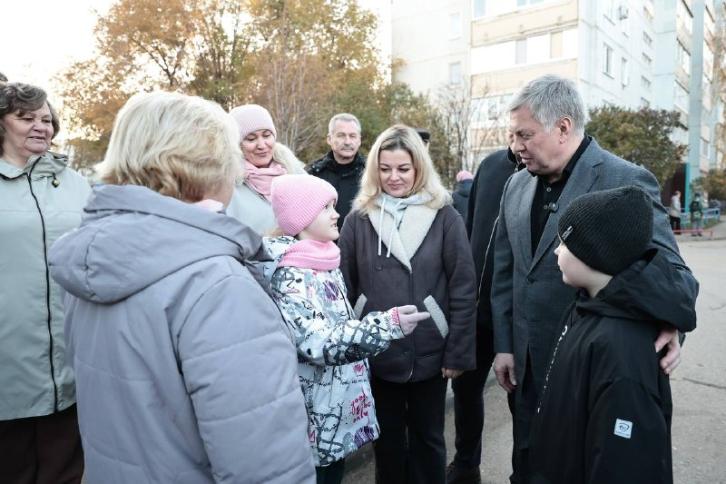

01
Общество и городская среда · событие дня
✅ Сегодня проверил исполнение поручения, которое дал во время личного приёма
Старшая по дому №46 на улице Отрадной Алёна Александровна Костарева обратилась с просьбой сделать детскую площадку. Сейчас площадка уже радует ребят, установили её по городской программе «Безопасный двор». У жителей есть и другие планы: освещение, озеленение, установка шлагбаума.…